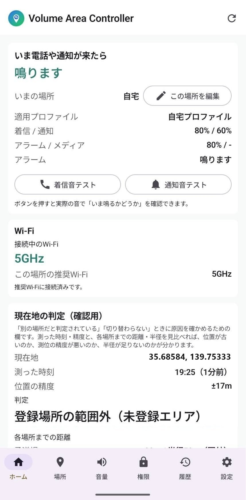
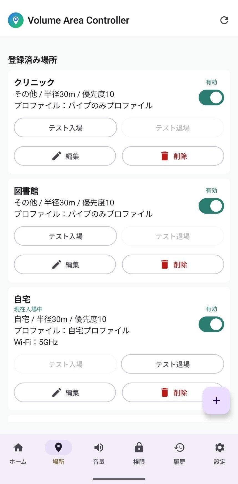

Androidアプリ・無料
Volume Area Controller
現在地に応じて、スマホの音量を自動で切り替える
APKをダウンロード（v1.5.22） 匿名アンケートに答える
Volume Area Controller（音量エリアコントローラー）は、現在地に応じて着信音量・通知音量・アラーム音量・メディア音量を自動で切り替えるAndroidアプリです。 会社・病院・図書館・学校などでは音量を抑え、自宅では着信や通知音が鳴る状態に戻すなど、お好みの設定が可能です。


主な機能
- 場所（緯度・経度・半径）ごとに音量プロファイルを割り当て、入退場を自動検知して音量を適用
- 同じ音量プロファイルを複数の場所で使い回せる「場所ルール × 音量プロファイル」方式
- 登録した場所以外にいるときの動作（指定プロファイルを適用／直前の音量を維持）
- メディア音量は指定したときだけ変更。動画や音楽の再生中に勝手に変わりません
- 朝のアラーム保護 — 「アラーム保護」をONにした音量プロファイルが適用されている間は、朝5〜9時にアラーム音量が下がっていても自動で引き上げます
- 屋内などで測位が数十mずれても、近くに一定時間とどまれば正しい場所として自動補正（場所タブでOFFにもできます）
- 場所ごとに複数のWi-Fi（SSID）を登録でき、接続中のWi-Fiで場所を確実に判別（2.4GHzと5GHzでSSIDが分かれる自宅などにも対応）
- 手で音量を変えたら同じ場所にいる間は自動で上書きしない「手動変更ガード」
- 場所ごとにWi-Fiを指定できる「Wi-Fi切替アシスト」（違うWi-Fi接続中なら通知でお知らせ）
- 移動しなくても動作確認できる「テスト入場」「テスト退場」ボタン
- 場所登録はOpenStreetMapの地図から。現在地取得・住所検索・地図タップ・緯度経度入力に対応
- いつ・どこで・どのプロファイルに切り替わったかが分かる適用履歴（実際に音量が変わったときだけ記録／直近7日・最大300件）
- 音量プロファイルの編集画面で、着信音・通知音・アラーム音を編集中の音量のまま試聴できる再生ボタン
- 設定のバックアップ — 登録した場所と音量プロファイルをJSONファイルへ書き出し／読み込み。機種変更やアプリの入れ直しでも設定を作り直さずに済みます
使いはじめの3ステップ
- 権限を許可する — 「権限」タブの案内に沿って、位置情報を「常に許可」まで進めます（必須）。通知の許可と電池の最適化の除外も、ここから設定できます。
- 音量プロファイルを選ぶ・作る — 「音量」タブに初期プロファイルが入っています。着信・通知・アラーム・メディアの音量やバイブを、必要に応じて編集します。
- 場所を登録して割り当てる — 「場所」タブで地図から自宅や職場を登録し、判定半径とプロファイルを指定します。登録できたら「テスト入場」で、その場で動作を確認できます。
登録した場所の外にいるときの音量は、「音量」タブの一番上にある「デフォルト」で決めます（指定したプロファイルを適用／直前の音量を維持）。
料金
完全無料です（広告・アプリ内課金・サブスクなし）
ダウンロード（Android）
本アプリは Google Play ではなく、このサイトから直接配布しています（無料）。下のボタンからAPKをダウンロードしてインストールしてください。
最新版 v1.5.22（2026年9月13日公開）／ 約3.9MB ／ 対象: Android 10 以降（ジオフェンス検知に Google Play 開発者サービスが必要です）。
インストール方法
- 上のボタンからAPKをダウンロードします。
- ダウンロードしたファイルを開きます。
- 初回は「不明なアプリのインストール」を求められるので、ブラウザ／ファイルアプリに対して許可します（設定 → アプリ → 特別なアプリアクセス → 不明なアプリのインストール）。
- 画面の案内に従ってインストールします。
※Google Play を経由しないため、インストール時に警告が表示される場合があります。提供元がこのサイト（masatools.pages.dev）であることをご確認のうえお進みください。
※すでにインストール済みの場合も、新しいAPKを開けばそのまま上書き更新されます（旧版の削除は不要です。v1.1以降からの更新なら、登録した場所や音量プロファイルはそのまま引き継がれます）。
必要な権限
- 位置情報（バックグラウンド含む） — 登録した場所への入退場を検知するために使用します。まず「アプリの使用中のみ許可」を選び、そのあとAndroidの設定画面で「常に許可」に変更する2段階です。
- 通知 — 音量の切り替えやWi-Fi切替アシストのお知らせに使用します（任意）。
- 電池の最適化から除外（推奨） — 除外しないと、しばらく使わないうちにバックグラウンド動作が止められ、切り替わらなくなることがあります。
位置情報・場所ルール・音量プロファイルなどのデータはすべて端末内にのみ保存され、外部サーバーへの送信はありません（地図表示時のOpenStreetMapタイル取得のみ通信します）。詳しくはプライバシーポリシーをご覧ください。
ご利用上の注意
- 端末やメーカーの設定によって、通知音量と着信音量が連動する場合があります。
- 省電力設定やメーカー独自のバックグラウンド制限により、入退場の検知が遅れることがあります。アプリ起動時・画面復帰時・約15分ごとのバックグラウンドチェックで自動補正します（権限画面から電池の最適化を除外しておくと安定します）。
- 判定半径は5〜5000mの範囲で、場所の広さに合わせて調整できます（自宅や小さな職場は20〜50m、広い学校・病院・工場などは300〜500m以上が目安。5m・10mは動作確認用で、GPS誤差の影響を受けやすくなります）。近くに別の場所を登録している場合は、それぞれにWi-Fiを登録しておくと取り違えを防げます。
- 地図タイルの表示にはネットワーク接続が必要です。登録後の入退場判定はオフラインでも動作します。
- 場所や音量の設定は、端末内にのみ保存されます（外部に送信しません）。そのため機種変更の際は、新しい端末で登録し直してください（場所が数か所であれば数分で完了します）。
- Androidの仕様上、Wi-Fiの自動切替やWi-FiのON/OFFはアプリから行えません。「Wi-Fi切替アシスト」は通知でお知らせし、タップでWi-Fiの設定画面を開くところまでを行います（Wi-Fiのパスワードはアプリに保存しません）。
うまく切り替わらないときは
- まず「権限」タブを確認 — 位置情報が「アプリの使用中のみ許可」のままだと、アプリを閉じている間の自動切替は動きません。「常に許可」まで進めてください。
- 電池の最適化を除外 — 数日使わない期間があると、バックグラウンド処理ごと止められることがあります。権限タブから除外できます。
- 「鳴らさない（サイレント）」「バイブのみ」だけ効かない場合 — Androidの仕様で、マナーモードへの切り替えに「サイレントモード（Do Not Disturb）へのアクセス」の許可が必要な端末があります。設定 → アプリ → 特別なアプリアクセス → サイレントモードへのアクセス で本アプリを許可してください（音量の上げ下げだけならこの許可は不要です）。
- 場所を取り違える・半径のすぐ外と判定される — ホームタブの「現在地の判定」に、測位精度・各場所までの距離・半径・圏内かどうかが表示されます。半径が足りないのか測位がずれているのかを確認できます。Wi-Fiを登録しておくと、屋内でも場所を確実に判別できます。